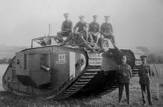

Introduction
World War I started in 28th July 1914 and lasted 4 years, ending on 11th November 1918
Tanks
Tanks were first invented in WWI for trench warfare.

Flamethrowers
Flamethrowers were invented for trench warfare, to create mass confusion
and chaos.
Poison Gases
Poison gases were commonly used in enclosed areas or trenches. To flush enemies
out or kill them instantly. Mustard gases were, in particular, deadly. They had
no smell or color, giving the enemies no warning at all before dropping dead.

List of important events by order:
- Jul 30, 1914 - Russia intervening to support its ally, Serbia, against Austria-Hungary, causing the great powers of Europe to clash among themselves.
- April 6, 1917 - US enters WW1 on the sides of France and Britain against Germany.
- Mar 3, 1918 - Russia and Germany signs a peace treaty, enabling them to shift their forces to focus on the west, causing problems for France, Britain and America.
- Armistice Day - Armistice is signed, ending war on the western front, ending World War 1.